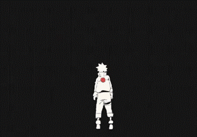

Lição 1: Nunca desista dos seus sonhos

Se você tem uma meta, Naruto lhe ensina a jamais desistir e não se importar com o que as pessoas
pensam, ou o quão louco elas dizem que você é. Apenas siga seu coração e faça o que for necessário
para alcançar seu objetivo.
Mesmo passando por muitas dificuldades e que muitos diriam "impossíveis de superar", Naruto nos mostra
que é possível se levantar e perseguir as suas metas, dando o seu melhor e persistindo. Mesmo ao errar
aprender, mudar, quantas vezes for preciso.
Lição 2: O verdadeiro valor de uma amizade
Não importa o que o seu amigo faça ou o caminho que ele resolve trilhar, você deve sempre lutar para
mostrar o que é certo a ele, mesmo que isso inclua se prejudicar apenas para "salvar" essa pessoa.
O Naruto jamais se esqueceu de Sasuke, e ele estava sempre disposto à dar a vida pelos amigos se fosse
preciso.
Lição 3: O valor do companheirismo
Os ninjas do anime trabalham sempre em times de quatro pessoas, sendo uma delas o líder. Cada um tem
um papel fundamental na equipe e juntos eles são muito mais fortes que individualmente.
Como diz Obito Uchiha, quem abandona seus amigos é pior que a escória.
Lição 4: Seja humano
Algo um pouco estranho de se dizer, mas que é muito bem transmitido no anime! É importante sempre
lembrar que somos todos humanos e devemos nos ajudar, procurando respeitar as diferenças e aprender
com elas. Sobretudo, devemos conviver com nossos iguais ou não, tentando entender o que se passa com
o outro.
Lição 5: Não use desculpas para se limitar
Como dito anteriormente, Naruto passou por muitas coisas, mas suas atitudes não deixavam isso nada claro!
Naruto sempre dá o seu melhor e ajuda os que estão ao seu redor, mesmo não precisando e nem ganhando nada com isso.
O senso de misericórdia de Naruto é impressionante, além disso quando está treinando nunca usa desculpas como
limitações, nunca tem autopiedade para justificar alguma dificuldade. Enfim, mesmo tendo passado por diversas
dificuldades, sempre dá o seu melhor para alcançar seu sonho.